This function creates a plot of melatonin concentration over time with various optional overlays, including DLMO fit lines, DLMO time stamp, threshold lines, melatonin profile segment highlights, best-fit parallelogram, and ROI residual heatmaps.
Usage
plot_profile(
profile_data,
show_threshold = TRUE,
threshold = 2.3,
show_segments = TRUE,
show_parallelogram = FALSE,
pll_result = NULL,
show_roi = FALSE,
roi_line_only = TRUE,
roi = NULL,
show_dlmoIP = TRUE,
dlmo = NULL,
dlmoFit = NULL,
show_fit = FALSE,
show_roi_heatmap = FALSE,
plot_coarse = FALSE,
mode = c("analyzed", "raw")
)Arguments
- profile_data
A dataframe containing melatonin concentration data with
datetimevalues.- show_threshold
Logical. If
TRUE, adds a horizontal threshold line atthresholdvalue.- threshold
Numeric. The threshold value for melatonin concentration (default
2.3 pg/mL).- show_segments
Logical. If
TRUE, highlights base, intermediate, and ascending segments.- show_parallelogram
Logical. If
TRUE, overlays a parallelogram on the plot.- pll_result
List containing parallelogram parameters, including:
pll_datetime_0: POSIXct timestamp for the left boundary.pll_datetime_1: POSIXct timestamp for the right boundary.pll_slope: Numeric. The slope of the parallelogram edges.corners: List of corner coordinates (ll,lr,ur,ul).
- show_roi
Logical. If
TRUE, overlays the region of interest (ROI).- roi_line_only
Logical. If
TRUE, only plots the ROI boundaries, not the shaded area.- roi
List containing ROI boundaries (
x_start,x_end,y_min,y_max).- show_dlmoIP
Logical. If
TRUE, marks the DLMO inflection point.- dlmoFit
List containing DLMO fit results, including:
inflection_point: A list withx(decimal hours) andy(melatonin level).base_params: Parameters of the base segment fit.ascending_params: Parameters of the ascending segment fit.grid: search grid for inflection point.res: Residuals from grid search.
- show_fit
Logical. If
TRUE, overlays DLMO fit lines.- show_roi_heatmap
Logical. If
TRUE, adds a heatmap for ROI residuals.- mode
Character. Plot mode, either
"analyzed"(default) for the diagnostic DLMO plot or"raw"for a raw time-series plot before segmentation and fitting. In"raw"mode, analysis overlays are disabled.profile_datamust already be a data frame; if starting from a CSV file, read it first withreadr::read_delim(file_path, delim = ";")or useplot_raw_profile()directly.
Details
This function plots melatonin concentration over time with flexible overlays.
The DLMO fit is visualized as a piecewise-linear or parabolic fit.
The inflection point is highlighted using a pink marker.
A parallelogram can be overlaid to show truncated ascending segments.
The ROI heatmap provides a residuals-based visualization of the inflection search.
Use
mode = "raw"to plot an unsegmented profile before runningcalculate_dlmo(). This is useful for checking threshold choice and identifying possible early above-threshold excursions.
See also
plot_raw_profile() for a convenience wrapper that accepts either a
data frame or a CSV file path.
Examples
filename <- system.file("extdata/sample_melatonin_profile.csv", package = "dlmoR")
raw_data <- readr::read_delim(filename, delim = ";", show_col_types = FALSE)
plot_profile(raw_data, threshold = 5, mode = "raw")
 dlmo_result <- calculate_dlmo(file_path = filename, threshold = 5, fine_flag = FALSE)
#> Loading data from file: /private/var/folders/jc/0t013ckx36db6z5ztm52h3vw0000gn/T/RtmpQ4mYk1/temp_libpath84c12765bdc9/dlmoR/extdata/sample_melatonin_profile.csv
#> Creating 'time' column from 'datetime'.
#> Warning: Warning: Descents across threshold found in base segment at the following timestamps:
#> 2024-04-17 08:18:57
#> Warning: Warning: Large slope differences found in base segment at the following timestamps:
#> 2024-04-17 08:18:57, 2024-04-17 09:04:33
dlmo_result$dlmoplotcoarse
#> Warning: font metrics unknown for character 0x0a in encoding latin1
#> Warning: font metrics unknown for character 0x0a in encoding latin1
#> Warning: font metrics unknown for character 0x0a in encoding latin1
#> Warning: font metrics unknown for character 0x0a in encoding latin1
dlmo_result <- calculate_dlmo(file_path = filename, threshold = 5, fine_flag = FALSE)
#> Loading data from file: /private/var/folders/jc/0t013ckx36db6z5ztm52h3vw0000gn/T/RtmpQ4mYk1/temp_libpath84c12765bdc9/dlmoR/extdata/sample_melatonin_profile.csv
#> Creating 'time' column from 'datetime'.
#> Warning: Warning: Descents across threshold found in base segment at the following timestamps:
#> 2024-04-17 08:18:57
#> Warning: Warning: Large slope differences found in base segment at the following timestamps:
#> 2024-04-17 08:18:57, 2024-04-17 09:04:33
dlmo_result$dlmoplotcoarse
#> Warning: font metrics unknown for character 0x0a in encoding latin1
#> Warning: font metrics unknown for character 0x0a in encoding latin1
#> Warning: font metrics unknown for character 0x0a in encoding latin1
#> Warning: font metrics unknown for character 0x0a in encoding latin1

plot_raw_profile(file_path = filename, threshold = 5)
#> Loading data from file: /private/var/folders/jc/0t013ckx36db6z5ztm52h3vw0000gn/T/RtmpQ4mYk1/temp_libpath84c12765bdc9/dlmoR/extdata/sample_melatonin_profile.csv
#> Creating 'time' column from 'datetime'.
